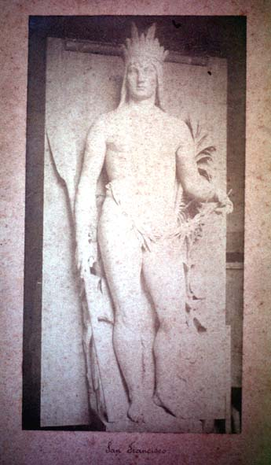

|
|  |
|
Carlos André Gomes, Rio São Francisco, 1889
|
One of the classical figures of Brazilian romanticism to avoid any mention of the slavery institution was a mythicized indigenous past. Chivalric native warriors, in the poetry of Gonçalves Dias and the novels of José de Alencar, gladly sacrificed their lives to defend the honour of blonde maidens who would embody the nascent Brazilian nation. In the visual arts, indigenous figures such as Carlos André Gomes´s 'Rio São Francisco' (a sculptural adorment of the Brazilian pavilion at the Paris Universal Exhibition of 1889) were often used allegorically to refer to the vast extension and natural cohesion of the country, as a 'continental island' surrounded by its great rivers.
|